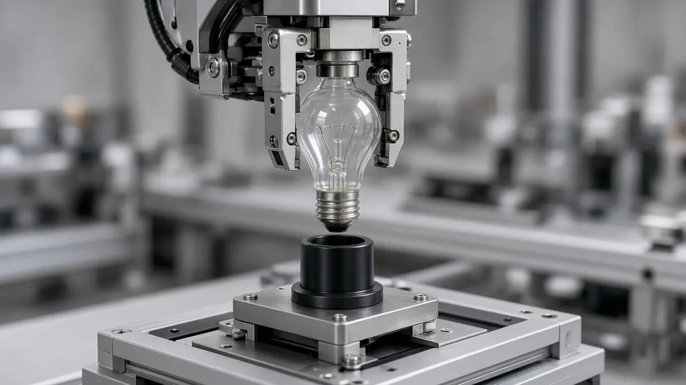
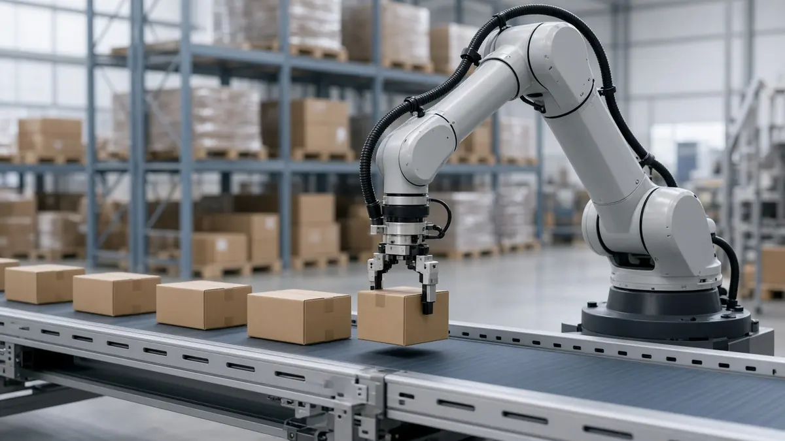

Funding
Eka Robotics announces $150M Series A for force-sensing robot manipulation
Short answer: Eka Robotics, a robotics start-up, announced on 20 October 2026 a $150 million Series A led by Andreessen Horowitz and F-Prime, a Fidelity Investments affiliate, according to SiliconANGLE and the company's announcement. SiliconANGLE reports a valuation of $1.45 billion.
Eka says it is building a "vision-force-action" model that combines camera images with force feedback from a custom gripper. It says the model is trained mostly in simulation using reinforcement learning, not by imitating human demonstrations, and that it is starting with dexterous manipulation, with examples such as packing fruit and assembling server racks.

The company reports its robots pick a wide range of objects not seen in training at about 1,500 operations per hour, against a human baseline of about 600 that Eka uses. SiliconANGLE adds that Eka told TechCrunch the robots handle objects up to one kilogram, succeed on more than 95% of picks, and are in pilots with industrial customers it has not named. These are company figures and have not been independently verified.
SiliconANGLE, citing TechCrunch, quotes Kris Hauser of the University of Illinois Urbana-Champaign as saying a demo had a "wow factor" while questioning whether the system could run on an assembly line for a year without failure. He said it is still an open question whether it generalises beyond pick-and-place.

Eka says the new money will help extend the model to more tasks and speed up customer deployments. According to SiliconANGLE, the company was started last year by MIT professor Pulkit Agrawal and Tuomas Haarnoja, who joined from Google DeepMind, and investors have now put in about $161 million in total.